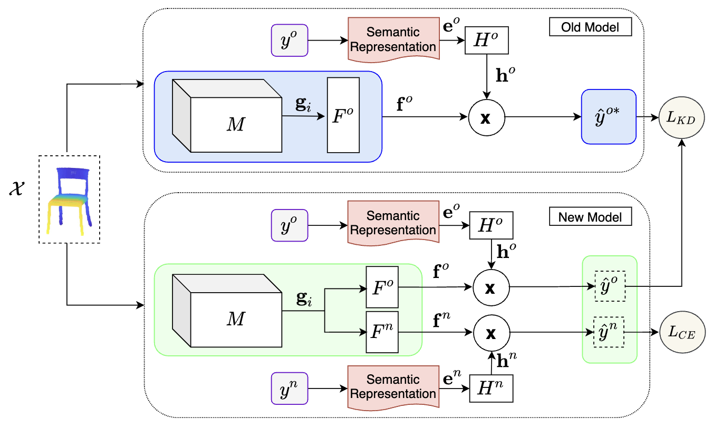

News
- Our paper "Adapt-As-You-Walk Through the Clouds: Training-Free Online Test-Time Adaptation of 3D Vision-Language Foundation Models" has been accepted to AAAI'26
- Our paper "SDMD: Subspace-Driven Model Distillation in Indefinite Inner Product Spaces" has been accepted to WACV'26
- I have started a new position as Senior AI/ML Scientist at Macquarie University's Silicon Platforms Lab starting from August 2025
- Our paper "LumiNet: Perception-Driven Knowledge Distillation via Statistical Logit Calibration" has been accepted to TMLR'25
- Our papers "ETTA: Efficient Test-Time Adaptation for Vision-Language Models" and "Task Progressive Curriculum Learning" have been accepted to BMVC'25
- Our paper "Test-Time Adaptation of 3D Point Clouds via Denoising Diffusion Models" has been accepted to WACV'25
- Our paper "Canonical shape projection is all you need for 3d few-shot class incremental learning" has been accepted to ECCV'24
- Our paper "Backpropagation-free Network for 3D Test-time Adaptation" has been accepted to CVPR'24
- Our paper "Continual test-time domain adaptation via dynamic sample selection" has been accepted to WACV'24
- Our paper "Foundation Model-Powered 3D Few-Shot Class Incremental Learning via Training-free Adaptor" has been accepted to ACCV'24
- Our paper "3D Point Cloud Network Pruning: When Some Weights Do not Matter" has been accepted to BMVC'24
- Our paper "3D scene generation for zero-shot learning using ChatGPT guided language prompts" has been accepted to CVIU'24
- Our papers "Efficient Atmospheric Correction" and "Enhancing Glaucoma Diagnosis" have been accepted to DICTA'24
🤖 Ask Me Anything
Have questions about my research, career, or want to know more about my work? Chat with my AI assistant that knows about my background, publications, and expertise. Feel free to ask about my research areas, publications, or any other questions you might have!
Chat with Ali's AI Assistant
Engage with my intelligent AI assistant that has comprehensive knowledge about my research journey, publications, and expertise in AI/ML, computer vision, and generative technologies.
What are your main research areas?
Tell me about your publications
What's your career journey?
How can I collaborate?
Research Expert
Publication Knowledge
Collaboration Ready
Publications
Citations Over Time
Citation Metrics
Total Citations
925
h-index
12
i10-index
13
Publications
2026
-
 Adapt-As-You-Walk Through the Clouds: Training-Free Online Test-Time Adaptation of 3D Vision-Language Foundation Models
Adapt-As-You-Walk Through the Clouds: Training-Free Online Test-Time Adaptation of 3D Vision-Language Foundation Models
Mehran Tamjidi, Hamidreza Dastmalchi, Mohammadreza Alimoradijazi, Ali Cheraghian, Aijun An, Morteza Saberi
AAAI 2026 -
 SDMD: Subspace-Driven Model Distillation in Indefinite Inner Product Spaces
SDMD: Subspace-Driven Model Distillation in Indefinite Inner Product Spaces
Zeeshan Hayder, Ali Cheraghian, Lars Petersson, Mehrtash Harandi
WACV 2026
2025
-
 LumiNet: Perception-Driven Knowledge Distillation via Statistical Logit Calibration
LumiNet: Perception-Driven Knowledge Distillation via Statistical Logit Calibration
MI Hossain, MM Lutfe Elahi, S Ramasinghe, A Cheraghian, F Rahman, N Mohammed, S Rahman
TMLR 2025 -
 ETTA: Efficient Test-Time Adaptation for Vision-Language Models through Dynamic Embedding Updates
ETTA: Efficient Test-Time Adaptation for Vision-Language Models through Dynamic Embedding Updates
H Dastmalchi, A An, A Cheraghian
BMVC 2025 -
 Task Progressive Curriculum Learning for Robust Visual Question Answering
Task Progressive Curriculum Learning for Robust Visual Question Answering
A Akl, A Khamis, Z Wang, A Cheraghian, S Khalifa, K Wang
BMVC 2025 -
 Test-Time Adaptation of 3D Point Clouds via Denoising Diffusion Models
Test-Time Adaptation of 3D Point Clouds via Denoising Diffusion Models
H Dastmalchi, A An, A Cheraghian, S Rahman, S Ramasinghe
WACV 2025
2024
-
 Backpropagation-free Network for 3D Test-time Adaptation
Backpropagation-free Network for 3D Test-time Adaptation
Y Wang, A Cheraghian, Z Hayder, J Hong, S Ramasinghe, S Rahman
CVPR 2024 -
Continual test-time domain adaptation via dynamic sample selection
Y Wang, J Hong, A Cheraghian, S Rahman, D Ahmedt-Aristizabal
WACV 2024 -
 Canonical shape projection is all you need for 3d few-shot class incremental learning
Canonical shape projection is all you need for 3d few-shot class incremental learning
A Cheraghian, Z Hayder, S Ramasinghe, S Rahman, J Jafaryahya
ECCV 2024 -
Foundation Model-Powered 3D Few-Shot Class Incremental Learning via Training-free Adaptor
S Ahmadi, A Cheraghian, M Saberi, MT Abir, H Dastmalchi, F Hussain
ACCV 2024 -
 3D Point Cloud Network Pruning: When Some Weights Do not Matter
3D Point Cloud Network Pruning: When Some Weights Do not Matter
A Biswas, MI Hossain, MM Elahi, A Cheraghian, F Rahman
BMVC 2024 -
 3D scene generation for zero-shot learning using ChatGPT guided language prompts
3D scene generation for zero-shot learning using ChatGPT guided language prompts
S Ahmadi, A Cheraghian, TF Chowdhury, M Saberi, S Rahman
CVIU 2024 -
 Efficient Atmospheric Correction for Onboard Processing Using Knowledge Distillation and Model Compression
Efficient Atmospheric Correction for Onboard Processing Using Knowledge Distillation and Model Compression
M Zhang, A Cheraghian, Y Qin, D Benn, T Rollan, N Habili
DICTA 2024 -
 Enhancing Glaucoma Diagnosis through Vision-Language Models and Large Language Model Descriptions
Enhancing Glaucoma Diagnosis through Vision-Language Models and Large Language Model Descriptions
HY Bae, M Saberi, S Shariflou, M Kalloniatis, J Phu, A Agar, A Cheraghian
DICTA 2024
2023
-
 ChatGPT-guided Semantics for Zero-shot Learning
ChatGPT-guided Semantics for Zero-shot Learning
FH Shubho, TF Chowdhury, A Cheraghian, M Saberi, N Mohammed
DICTA 2023
2022
-
 Zero-shot learning on 3d point cloud objects and beyond
Zero-shot learning on 3d point cloud objects and beyond
A Cheraghian, S Rahman, TF Chowdhury, D Campbell, L Petersson
IJCV 2022 -
Few-shot class-incremental learning for 3d point cloud objects
T Chowdhury, A Cheraghian, S Ramasinghe, S Ahmadi, M Saberi
ECCV 2022 -
 Prompt-guided scene generation for 3d zero-shot learning
Prompt-guided scene generation for 3d zero-shot learning
M Nasiri, A Cheraghian, TF Chowdhury, S Ahmadi, M Saberi, S Rahman
DICTA 2022
2021
-
 Semantic-aware knowledge distillation for few-shot class-incremental learning
Semantic-aware knowledge distillation for few-shot class-incremental learning
A Cheraghian, S Rahman, P Fang, SK Roy, L Petersson, M Harandi
CVPR 2021 -
 Synthesized feature based few-shot class-incremental learning on a mixture of subspaces
Synthesized feature based few-shot class-incremental learning on a mixture of subspaces
A Cheraghian, S Rahman, S Ramasinghe, P Fang, C Simon, L Petersson
ICCV 2021 -

Learning without forgetting for 3d point cloud objects
T Chowdhury, M Jalisha, A Cheraghian, S Rahman
IWANN 2021
2020
-
Transductive zero-shot learning for 3d point cloud classification
A Cheraghian, S Rahman, D Campbell, L Petersson
WACV 2020
Earlier Publications
-

-
 3dcapsule: Extending the capsule architecture to classify 3d point clouds
3dcapsule: Extending the capsule architecture to classify 3d point clouds
A Cheraghian, L Petersson
WACV 2019 -
 Surface geodesic pattern for 3D deformable texture matching
Surface geodesic pattern for 3D deformable texture matching
F Hajati, A Cheraghian, S Gheisari, Y Gao, AS Mian
Pattern Recognition 2017